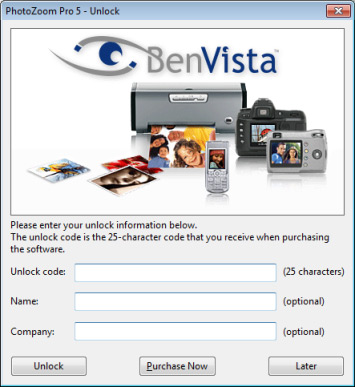

Indien u de software nog niet heeft geactiveerd zal het activeringscherm automatisch verschijnen bij het opstarten van het programma (zowel bij de zelfstandige applicatie als bij de plug-in):

Sommige licenties vereisen dat er naast een activeringscode (unlock code) ook een naam en e-mailadres worden ingevuld. In dergelijke gevallen staan de vereiste naam- en e-mailgegevens altijd duidelijk bij de activeringscode gespecificeerd. Gelieve er op te letten dat u alle gegevens exact zoals vermeld invult.
Als u deze software als upgrade heeft gekocht, dan kan het zijn dat de software om extra activeringsgegevens vraagt. Mocht dit inderdaad het geval zijn, vult u dan alle gegevens exact zoals de software aangeeft in.
U hoeft uw activeringsgegevens slechts één maal in te voeren om de software permanent te activeren. Ook na het installeren van een gratis update hoeft u de gegevens niet opnieuw in te voeren.
Merk op dat zolang u de software niet heeft geactiveerd (d.m.v. een geldige activeringscode), deze slechts in demo-modus te gebruiken zal zijn. Dit brengt één restrictie met zich mee: de afbeeldingen die u opslaat zullen een watermerk bevatten. Wanneer de software in demo-modus draait kunt u te allen tijde het activeringsscherm openen via de optie "Activeren..." uit het "Help" menu.
 Wanneer u de software online heeft gekocht en uw activeringscode (unlock code) per e-mail heeft ontvangen, dan raden wij aan om bij het invullen van uw activeringsgegevens gebruik te maken van kopiëren/plakken. Dit voorkomt eventuele typefouten.
Wanneer u de software online heeft gekocht en uw activeringscode (unlock code) per e-mail heeft ontvangen, dan raden wij aan om bij het invullen van uw activeringsgegevens gebruik te maken van kopiëren/plakken. Dit voorkomt eventuele typefouten.